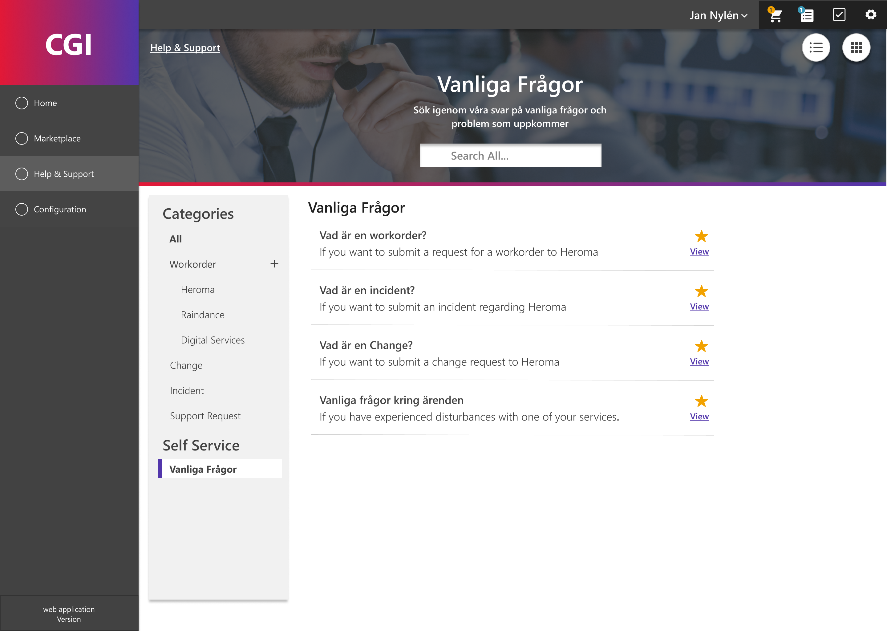

CGI 2018-2021
Customer Support Portal
As a frontend developer and UX-Designer I worked with designing new features for a customer portal and implementing them with Knockout.js and vue.js. Throughout 2019 I also took the lead on a UI/UX revamp of the portal. The purpose was to improve upon the problems that had been discovered since the first version of the UI was released.
A set of problem areas to focus on were defined and a design process was started to iteratively reach a new design with the help of prototypes and user tests. Most of the initial ideation and UX-work was based on previous support issues and a series of UX interviews held at the start of the year.
Frontend
UX-design
UI-design
Vue.js
SCSS
Prototyping
Figma